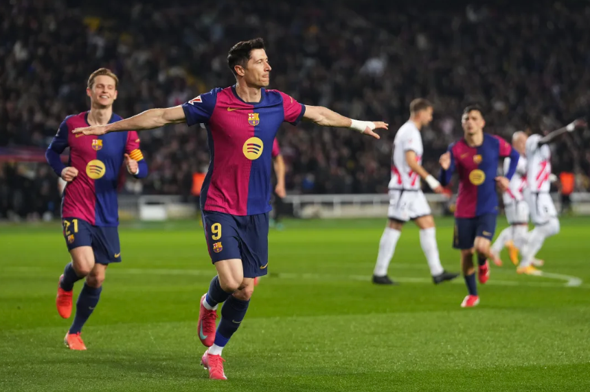
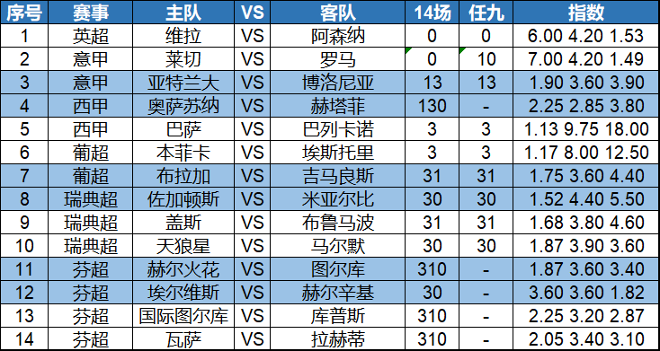

大家好！
宝哥的新家与大家终于见面了！记得收藏，并与好朋友分享，让更多朋友知道！
今天是英超意甲西甲等双赛，还有北欧的瑞典超芬超等，宝哥给大家带来初步观点，希望能给大家带来帮助。

昨晚西甲，皇马主场4-0大胜马拉加，贝林厄姆、姆巴佩和居莱尔都有进球，还有对手送上的乌龙大礼，穆里尼奥的球队在主场以一场大胜，来宣布了自己的王者归来。
英超中，回到主场的曼联也以一场5-2的大胜，挽回了首轮客场落败的尴尬。B费上演了帽子戏法。整体来看，五大联赛的豪门球队在周末表现非常强势；另外，实力相近的比赛中，主场球队往往会更好的表现。
新赛季，英超卫冕冠军阿森纳表现强势，社区盾杯大胜曼城夺冠，联赛首轮又3-0轻取考文垂，这次的对手维拉则是首轮0-4惨败给布莱顿，高下立判。即使客场作战，阿森纳也应该能全取3分！

新赛季的西甲，依然是巴萨和皇马的二人转。巴萨帮带领西班牙国家队世界杯夺冠，皇马则是引进了多名强援，还请回来铁血教练穆里尼奥。昨天的比赛中，皇马在主场4-0大胜，这次巴萨估计会展开军力竞赛，也会尽可能多地赢球。两队竞赛，巴萨不会输在起跑线上。
冷门关注葡超和瑞典超这样的赛事，所谓的一些豪门球队，状态并不是特别稳定，需要当心。
以下是今天14场和任九的初步观点，祝大家好运！
14场：0、0、13、130、3、3、31、30、31、30、310、30、310、310
任九：0、10、13、-、3、3、31、30、31、30、-、-、-、-

记得收藏和转发啊，感谢大家支持！